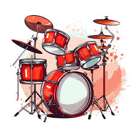
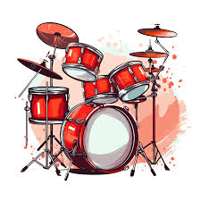

La Música: Un Lenguaje Universal
 

La música es una de las expresiones artísticas más antiguas y poderosas de la humanidad. Desde los ritmos tribales prehistóricos hasta las complejas sinfonías modernas, la música ha servido como un medio para comunicar emociones, contar historias, celebrar eventos y conectar a las personas a través de culturas y generaciones. Su capacidad para evocar sentimientos profundos y trascender barreras lingüísticas la convierte en un verdadero lenguaje universal.
Existen innumerables géneros musicales, cada uno con sus propias características, instrumentación y evolución histórica. Desde el enérgico rock hasta el suave jazz, pasando por la emotiva música clásica, el vibrante pop y los contagiosos ritmos latinos, la diversidad musical es tan vasta como la imaginación humana. Explorar estos géneros es adentrarse en un viaje sonoro que refleja la riqueza de la experiencia humana.
Los instrumentos musicales son el corazón de cualquier composición. Ya sean de cuerda, viento, percusión o electrónicos, cada instrumento aporta una sonoridad única que contribuye a la textura y el color de una pieza musical. Aprender a tocar un instrumento no solo es una habilidad gratificante, sino también una forma de profundizar la apreciación y el entendimiento de la música.
La música no solo es una forma de entretenimiento, sino que también tiene numerosos beneficios para la salud mental y física. Se ha demostrado que escuchar música reduce el estrés, mejora el estado de ánimo, fomenta la concentración e incluso ayuda en la recuperación de ciertas condiciones médicas. La musicoterapia, por ejemplo, utiliza la música como herramienta terapéutica para abordar diversas necesidades emocionales y cognitivas.
Principales Elementos de la Música
- **Melodía:** La sucesión de notas musicales que forman un patrón reconocible y agradable.
- **Ritmo:** La organización de los sonidos y silencios en el tiempo, creando un pulso y un movimiento.
- **Armonía:** La combinación de diferentes notas que suenan simultáneamente, creando acordes y progresiones.
- **Timbre:** La cualidad distintiva del sonido que permite diferenciar un instrumento o voz de otro.
- **Dinámica:** Las variaciones en la intensidad o volumen del sonido.